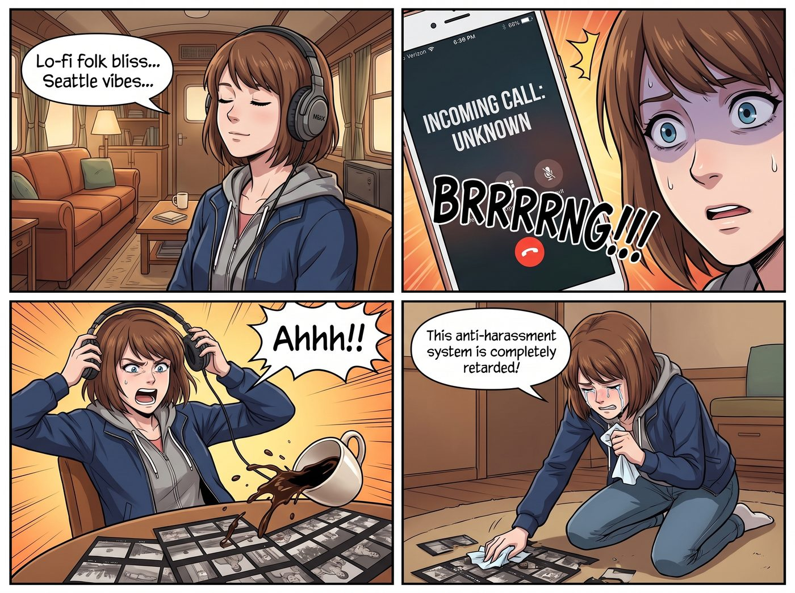

電話騷擾變現指南

當 Max 戴著降噪耳機，將降噪模式開到最大，正閉著眼睛沉浸在一首西雅圖地下獨立樂團的低傳真民謠中時，一場針對碳基生物聽覺神經的賽博謀殺毫無預警地降臨了。
手機那極度缺乏場景感知能力的音訊路由邏輯，決定在這一刻將一通未知的推銷電話，以極高分貝的預設鈴聲，直接轟進 Max 的耳膜。
「啊啊啊！！」
Max 發出一聲慘叫，猛地扯下耳機，連帶著把桌上的一杯黑咖啡全打翻在了她剛洗好的底片清樣上。她的心臟狂跳到幾乎要撞出胸腔，耳朵裡嗡嗡作響，彷彿剛在腦內引爆了一顆閃光彈。
「這防騷擾系統根本就是個智障！」Max 崩潰地抽著面紙擦拭底片，眼淚都快飆出來了，「我打開了將未知的來電設為靜音，結果它把相機維修店的電話掛了！我把它關掉，結果今天已經接了三個問我要不要辦學貸、四個問我要不要裝太陽能板的詐騙電話！」
坐在對面的 Victoria 優雅地翹著腿，看了一眼自己的手機，冷哼了一聲：「Caulfield，這不能怪科技公司。是美國這些無孔不入的垃圾行銷公司太猖狂了。連我上週都接到了一個問 Chase 財團繼承人要不要申請小額信貸的蠢電話。這就是資本主義的通病，妳只能忍著。」
一、被動收入的合規邏輯
「忍耐是對自身合法權益的惡意放棄，Victoria 學姐。」
實習生 Lily 幽靈般地滑著帶滾輪的人體工學椅，來到了 Max 的身邊。她遞給 Max 一張乾淨的超細纖維布，然後非常自然地拿過了 Max 的手機。
「Max 學姐，您將這些冷呼叫視為精神折磨，那是因為您站在了受害者的視角。」Lily 推了推反光的圓框眼鏡，大眼睛裡閃爍著熟悉的、令資本家膽寒的合規光芒，「在二號車廂，我們將電話騷擾視為一種高收益的無風險被動收入。」
Lily 將 Max 的手機連接到她的工作站，手指在鍵盤上飛舞。
「根據美國聯邦通信委員會的電話消費者保護法，」Lily 軟糯的聲音開始在車廂裡進行普法教育，「任何未經您明確書面同意，使用自動撥號系統或人工預錄語音向您撥打推銷電話的行為，每一次違規，您都有權索賠五百美元。如果是蓄意違規，法定賠償金將高達一千五百美元。」
「所以呢？妳要幫 Max 去告那些連總部在哪都不知道的騙子嗎？」Chloe 叼著棒棒糖嘲笑道。
「不需要跨國訴訟，Price 學姐。那些推銷太陽能和車險的，大多是美國本土的二級線索批發商。」
Lily 敲下回車鍵，螢幕上跳出一個極其複雜的通訊路由拓撲圖：「我剛剛修改了 Max 學姐的電信營運商底層轉發協議。從現在開始，任何不在通訊錄內的號碼，都不會再觸發耳機的鈴聲。它們會被無縫導向我部署在雲端的合規性誘捕蜜罐。」
二、AI分身的收割行動
Lily 點開一個剛才錄下的測試音檔。
擴音器裡傳來了一個與 Max 聲音完全一致、但語氣極度平靜的 AI 語音：
（詐騙者：您好，請問是 Max 嗎？我們是聯邦學生貸款減免中心的……）
（AI Max：您好，我對這個項目非常感興趣。為了確保通話品質，請問您代表的具體公司全名與統一機構代碼是什麼？）
（詐騙者：呃……我們是全美陽光信貸……）
（AI Max：感謝您的確認。您的自動撥號行為已記錄在案。您的公司實體已成功匹配。根據相關法案，您已欠我一千五百美元。正式的訴前需求信將在三十秒內自動傳真並發送至貴公司註冊代理人的信箱。祝您有美好的一天。）
車廂裡陷入了死一般的寂靜。音檔最後，只剩下那個推銷員倒抽一口冷氣和手機掉在地上的聲音。
「這個系統不僅能攔截噪音，」Lily 滿意地看著代碼日誌，「它還會自動利用公開資料庫反查他們的空殼公司，自動生成律師函，並自動發送和解協議。為了避免昂貴的聯邦集體訴訟，這些灰色公司有將近八成的機率會選擇在庭外直接支付這一千五百美元的封口費。」
「也就是說……」Max 呆呆地看著自己的手機。
「也就是說，Max 學姐，您以後可以繼續戴著耳機享受您的後搖滾。而每一通試圖打擾您的詐騙電話，都會在靜音狀態下，自動轉化為您帳戶裡的一千五百美元。」Lily 乖巧地笑了笑。
三、全員上癮的收割狂歡
三天後。
當 Max 正坐在沙發上，安靜地用底片相機拍攝窗外的雨景時，她的手機螢幕亮了一下，靜音彈出了一條銀行入帳通知：收到來自某公司的庭外和解轉帳，一千五百美元整。
Chloe 湊過來看了一眼，立刻嫉妒得紅了眼：「見鬼！Lily！快把我的號碼也接到妳那個蜜罐裡！我現在就去各大非法借貸網站填我的真實電話號碼！我要讓那些推銷員打爆我的手機！」
Victoria 則默默地放下了身為老錢家族的矜持，悄悄把自己的手機推到了 Lily 面前：「我的號碼也順便加進去。蒼蠅再小也是肉，這比我那個廢物基金經理賺錢快多了。」
而 Kate 正在廚房裡烤著燕麥餅乾。小天使看著大家因為詐騙電話而歡呼雀躍，溫柔地雙手合十：「那些打電話來騙人的先生女士們，現在一定因為面臨巨額賠償而感到深深的懊悔吧。希望他們能從中吸取教訓，改過自新，這真是一場充滿了教育意義的愛心懲戒呢。」
從那天起，Max 再也沒有因為突如其來的推銷電話而吃過癟。相反地，每當手機螢幕亮起未知的號碼時，這個原本極度社恐的復古文青，眼神裡都會閃爍起一種與實習生如出一轍的、期待著收割資本的幽暗光芒。